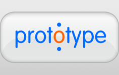
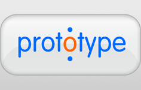
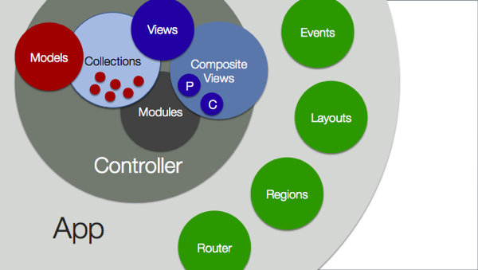
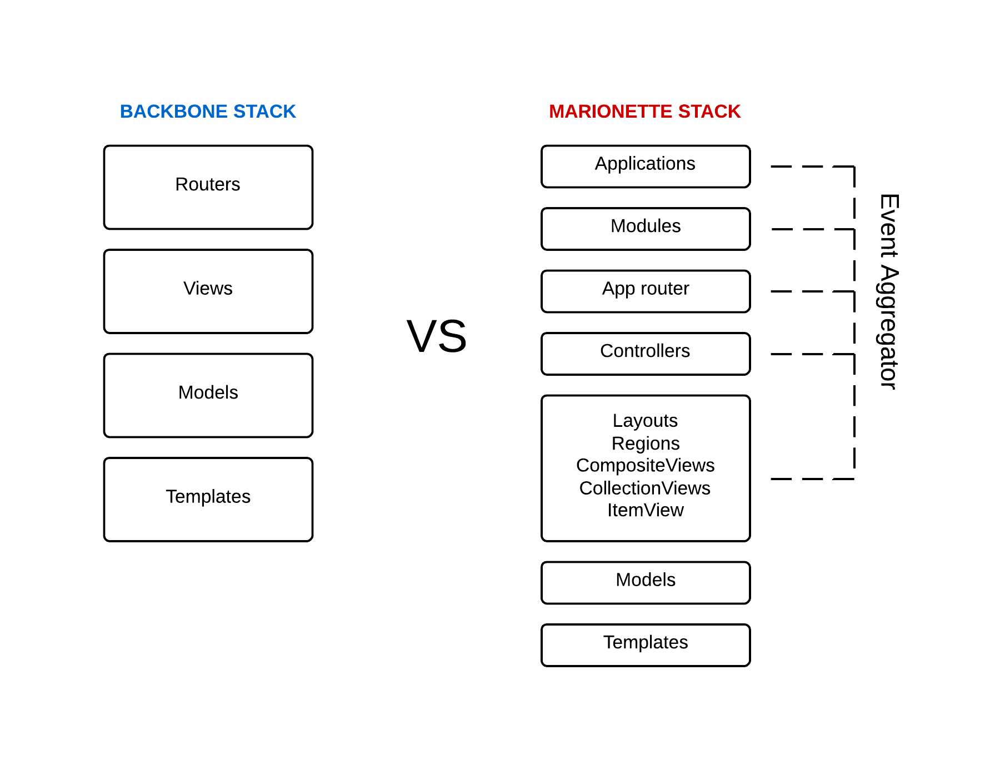
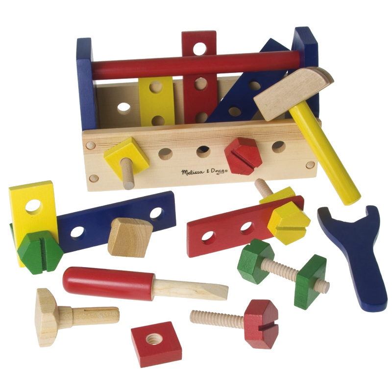

front-end
WELCOME TO THE JUNGLE
@antaipt
¿FRONT-END?
- Lo que el usuario percibe
- Mostrar información
- Recolectar datos
- Comunicación con back-end
- Diseño, usabilidad, experiencia de usuario.
Ejemplos
¿ESTO ES LA WEB?

¡ESTO ES LA WEB!

Las tecnologías


Principales funciones


Semántica
<header>
<hgroup>
<h1>Page title</h1>
<h2>Page subtitle</h2>
</hgroup></header><nav>
<ul>
Navigation...
</ul>
</nav><section>
<article>
<header>
<h1>Title</h1>
</header>
<section>
Content...
</section>
</article>
</section><footer>
Copyright ©
<time datetime="2010-11-08">2010</time>.
</footer>
Almacenamiento
saveButton.addEventListener('click', function () {
window.localStorage.setItem('value', area.value);
window.localStorage.setItem('timestamp', (new Date()).getTime());
}, false);
textarea.value = window.localStorage.getItem('value');var db = window.openDatabase("DBName", "1.0", "description", 5*1024*1024); //5MB
db.transaction(function(tx) {
tx.executeSql("SELECT * FROM test", [], successCallback, errorCallback);
});<html manifest="cache.appcache">Hardware
- Acceso al hardware del sistema
- Geolocalización
- Orientación
- Webcam
- Mejor integración con el sistema operativo
- Drag & drop
Comunicaciones
- Web Workers
- Web Sockets
- Notificaciones
Multimedia
- Vídeo
<video src="movie.webm" autoplay ></video> - Audio
<audio src="audio.oga" controls ></audio>
Gráficos
- Canvas
- Canvas 3D (WebGL)
- SVG
Core
- Nuevos selectores
- Atributos data-*
- Manipulación del DOM
- Histórico
Presentación
¿Se puede usar?
caniuse.comPolyfills
- Librería/módulo que ofrece funcionalidades que uno espera tener nativas
- Hacer más homogénea la API del navegador
- Pero ojo:
"When we come up with clever hacks & polyfills for dealing with oldIE, we shouldn’t feel pleased. We should feel angry" adactio.com/journal/5964/
— Paul Irish (@paul_irish) 11 de enero de 2013
Degradados
background: -moz-linear-gradient(top, #f6e6b4 0%, #ed9017 100%);
background: -webkit-gradient(linear, left top, left bottom,
color-stop(0%,#f6e6b4), color-stop(100%,#ed9017));
background: -webkit-linear-gradient(top, #f6e6b4 0%,#ed9017 100%);
background: -o-linear-gradient(top, #f6e6b4 0%,#ed9017 100%);
background: -ms-linear-gradient(top, #f6e6b4 0%,#ed9017 100%);
background: linear-gradient(to bottom, #f6e6b4 0%,#ed9017 100%);Sombras
-webkit-box-shadow: 5px 5px 5px 5px rgba(5, 5, 5, 0.3);
box-shadow: 5px 5px 5px 5px rgba(5, 5, 5, 0.3);
text-shadow: 4px 4px 3px #aaa;Transformaciones
#css3 #transforms pre {
-webkit-transform: rotateZ(5deg);
-webkit-transition: -webkit-transform 0.5s ease-in-out;
}
#css3 #transforms pre:hover {
-webkit-transform: rotateZ(-5deg);
}Animaciones
#css3 #animation {
-moz-transition: all 1s ease;
-webkit-transition: all 1s ease;
-o-transition: all 1s ease;
transition: all 1s ease;
}
#css3 #animation:hover {
-moz-transform: scale(2) rotate(30deg) translate(50px);
-webkit-transform: scale(1.2) rotate(30deg) translate(50px);
-o-transform: scale(2) rotate(30deg) translate(50px);
transform: scale(2) rotate(30deg) translate(50px);
}Fuentes
@font-face {
font-family: 'ANUDRG';
src: url(fonts/AnuDaw/ANUDRG.ttf);
}Media Queries
@media only screen and (max-device-width: 480px) {
/* YOUR CSS */
}Y mucho más...
- Selectores
- Tratamiento de texto
- Bordes
- ...
Pre-procesadores
- Actúa antes del compilador o intérprete
- Genera una salida para un compilador/intérprete
- Mejoran la organización y el mantenimiento


SASS
- Más robusto
- Integración con herramientas de construcción
- CSS óptimo
Variables
$blue: #3bbfce;
$margin: 16px;
.content-navigation {
border-color: $blue;
color:
darken($blue, 9%);
}
.border {
padding: $margin / 2;
margin: $margin / 2;
border-color: $blue;
}/* CSS */
.content-navigation {
border-color: #3bbfce;
color: #2b9eab;
}
.border {
padding: 8px;
margin: 8px;
border-color: #3bbfce;
}Nesting
table.hl {
margin: 2em 0;
td.ln {
text-align: right;
}
}
li {
font: {
family: serif;
weight: bold;
size: 1.2em;
}
}/* CSS */
table.hl {
margin: 2em 0;
}
table.hl td.ln {
text-align: right;
}
li {
font-family: serif;
font-weight: bold;
font-size: 1.2em;
}Mixins
@mixin table-base {
th {
text-align: center;
font-weight: bold;
}
td, th {padding: 2px}
}
@mixin left($dist) {
float: left;
margin-left: $dist;
}
#data {
@include left(10px);
@include table-base;
}/* CSS */
#data {
float: left;
margin-left: 10px;
}
#data th {
text-align: center;
font-weight: bold;
}
#data td, #data th {
padding: 2px;
}Herencia
.error {
border: 1px #f00;
background: #fdd;
}
.error.intrusion {
font-size: 1.3em;
font-weight: bold;
}
.badError {
@extend .error;
border-width: 3px;
}/* CSS */
.error, .badError {
border: 1px #f00;
background: #fdd;
}
.error.intrusion,
.badError.intrusion {
font-size: 1.3em;
font-weight: bold;
}
.badError {
border-width: 3px;
}- Framework para desarrollo CSS
- Autodetección de cambios
- Integración con otras herramientas
- Plugins
Hace tiempo...
- Lenguaje de scripting
- Orientación a objetos difusa
- Comportamiento extraño
- Ambito incoherente
- Lento
- Inmaduro
Algo bueno tendrá...

Hoy en día
- Está en un buen momento
- Comunidad activa
- Nuevos proyectos
- Madurez
- Expansión
Unas cuantas...


Frameworks


 


 TodoMVC
TodoMVC
Cosas buenas
- Separación de responsabilidades
- Ligero
- Flexible y personalizable
- Base de aplicaciones web
- Sólido

Cosas no tan buenas
- Se repite mucho código
- Módulos muy sobrecargados
- Personalizar mucho código
- Puede llegar a ser poco mantenible
- Vistas zombies
The secret to building large apps is never build large apps.
Break your applications into small pieces. then assemble those testeable, bite-sized pieces into your big application.- Justin Meyer, author JavaScriptMVC
Marionette
- Completitud
- Flexibilidad
- Eficiencia
- Mantenibilidad
- Escalabilidad
Marionette App
Marionette Stack
Testing
- Pruebas unitarias
- TDD
- Pruebas de integración
- Pruebas Crossbrowser
- Cobertura de tests
- Integración con Jenkins

- Framework para desarrollo de test
- Navegador o comandos
- Flexible
- TDD con chai (should, expect)
- Reporters (JSON, HTML, XUNIT)
- Cobertura de test (JSCoverage)
Pruebas de integración


Pruebas de Crossbrowser

Tooling
Tooling
- Herramientas para facilitarnos la vida
- El desarrollo lleva su tiempo
- Tareas tediosas
- Conoce tus herramientas
Debug/Profiling
IDE
- SublimeText
- Textmate
- vim
- EMACS
- NetBeans
- Aptana
Construcción y despliegue
Construcción (Desarrollo)
- Compilar SASS, Coffee
- Fácil depuración
yeoman buildyeoman serverConstrucción (Producción)
- Compilar, concatenar, validar y minimizar JS
- Compilar, concatenar, validar y minimizar CSS
- Minimizar HTML
- Optimizar imágenes
- Generar manifest.appcache
- Generar documentos versionados
yeoman build:minifycp -r yeoman/dist/* /var/www/THANKS!
By @antaipt
made with reveal.js